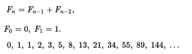

Medium Questions
Medium 1
Invert a binary tree.
Medium 2
Counting Games
Henry and Derek are waiting in a room. They have successfully qualified for the Snackdown Finals 2016, and decide to pass the time by playing a new game.
Before the game starts, they select N numbers: v(0), v(1), ..., v(N-1). These numbers will stay fixed throughout the game.
The initial state of the game consists of K integers x1, x2, ..., xK, each of which is in the range [0, N-1]. Thus, there are NK distinct states all in all. Then the players take turns, starting with Henry. In a turn, a player selects one of the integers, say xi, and decreases it by some positive multiple of 2v(xi). However, this is only valid if the resulting number is nonnegative. A player loses if there are no more valid moves left.
Henry and Derek have gotten really good at playing this game, so much that they have figured out the optimal strategy, and they always play optimally! This made the game really boring for them, because the winner is solely determined by the initial state of the game. So instead of playing the game, they decided to just answer the following question instead:
Of all the NK possible initial states, how many of them result in a win for Henry?
Input
The first line of the input contains an integer T denoting the number of test cases. The description of T test cases follows.
The first line of each test case contains two integers, N and K.
The second line contains N space-separated integers v(0), v(1), ..., v(N-1).
Output
The first line of the input contains an integer T denoting the number of test cases. The description of T test cases follows.
The first line of each test case contains two integers, N and K.
The second line contains N space-separated integers v(0), v(1), ..., v(N-1).
For each test case, output a single line containing a single integer, the number of initial states that result in a win for Henry. This number can be very large, so output it modulo 109 + 7.
Constraints
Example
Input:
3
2 3
1 0
5 3
2 0 1 0 0
5 3
2 0 1 0 1
Output:
4
94
100
Medium 3
Given a non-empty string and an int N, return the string made starting with char 0, and then every Nth char of the string. So if N is 3, use char 0, 3, 6, ... and so on. N is 1 or more.
Ex.
everyNth("Miracle", 2) → "Mrce"
everyNth("abcdefg", 2) → "aceg"
everyNth("abcdefg", 3) → "adg"
Medium 4
Given 2 int values, return true if one is negative and one is positive. Except if the parameter "negative" is true, then return true only if both are negative.
Ex.
posNeg(1, -1, false) → true
posNeg(-1, 1, false) → true
posNeg(-4, -5, true) → true
Medium 5
Given an array of integers, every element appears twice except for one. Find that single one. Note:Your algorithm should have a linear runtime complexity. Could you implement it without using extra memory?
Medium 6
Write a function that takes a string as input and returns the string reversed.
Ex.
Given s = "hello", return "olleh".
Medium 7
Given an integer (signed 32 bits), write a function to check whether it is a power of 4.
Ex.
Given num = 16, return true. Given num = 5, return false.
Medium 8
Write a function that takes a list of strings an prints them, one per line, in a rectangular frame. For example the list ["Hello", "World", "in", "a", "frame"] gets printed as:
*********
* Hello *
* World *
* in *
* a *
* frame *
*********
Medium 9
Write a function that computes the list of the first 100 Fibonacci numbers.
Ex.

Medium 10
Write a function that merges two sorted lists into a new sorted list
Medium 11
Write a function that returns the elements on odd positions in a list
Medium 12
Given an int array, return a new array with double the length where its last element is the
same as the original array, and all the other elements are 0. The original array will be length 1 or more. Note: by default, a new int array contains all 0's.
Ex.
makeLast([4, 5, 6]) → [0, 0, 0, 0, 0, 6]
makeLast([1, 2]) → [0, 0, 0, 2]
makeLast([3]) → [0, 3]
Medium 13
Given three ints, a b c, return true if two or more of them have the same rightmost digit. The ints are non-negative. Note: the % "mod" operator computes the remainder, e.g. 17 % 10 is 7.
Ex.
lastDigit(23, 19, 13) → true
lastDigit(23, 19, 12) → false
lastDigit(23, 19, 3) → true